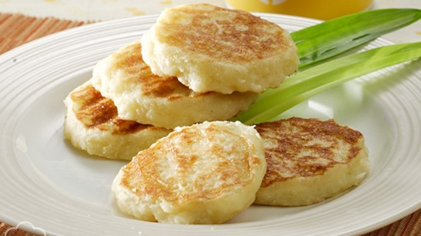

Sejarah
Wingko Babat pertama kali ada pada tahun 1946 di semrang. Wingko babad pertama kali di bawa oleh seorang wanita bernama Loe Lan Hwa beserta The Ek Tjong (suaminya) dan 2 anaknya. Mereka mengungsi dari Babad ke Semarang pada tahun 1944,di saat terjadinya perang dunia 2. Pada saat ia sampai di Semarang mereka melihat warga sekitar,ternyata belum ada yang menjual wingko. Akhirnya mereka terpikirkan untuk menjual makanan wingko di semarang pada tahun 1946,pada awalnya mereka hanya membuka toko kecil-kecilan berhubung banyak orang yang tertarik, mereka menanyakan nama makanan tersebut. Untuk memenuhi keinginan tahu konsumen nya kemudian ia memberi nama makanan ini "Wingko babad". Dari sinilah koe wingko terkenalnya oleh-oleh khas semarang, walaupun sebenarnya makanan ini berasal dari Babad,Jawa Timur.
Cara Membuat Wingko Babad Sederhana
Bahan yang perlu di siapkan
13 sdm tepung ketan
1/2 butir kelapa parut dan kukus
1 sdm gula pasir
1 santan instan
Sedikit garam
4 sdm mentega
Langkah pembuatanya
Aduk semua bahan, kecuali santan, aduk smpai merata
Setelah merata, masukkan santan, bentuk bulat pipih, ukuran kecil saja
Panggang di teflon dengan olesan minyak goreng dan api kecil,balik,tunggu matang, angkat
Sajikan
Rekomendasi Toko Wingko Babat Semarang
Wingko Babat Cap Stoom Mini
Alamat : Jalan.Cendrawasih no.8,Semarang Utara
Nomer : (024)3519698
Harga : Bervariatif
Jam : 08.00 - 21.00 (wib)
Wingko Babat Nn Meniko
Alamat : Jalan.Pandean Taman Harjo no.93,Semarang Timur
Nomer : (024)3562964
Harga : Original = Rp 22.000,5 rasa(coklat,nangka,pisang,durian,kelapa) = Rp 27.000
Jam : 08.00 - 18.45 (wib)
Wingko Babat Cap Tiga Kelapa Muda
Alamat : Jalan.Pekunden Tengah no.1110,Semarang
Nomer : (024)8416914
Harga : campur = Rp.18.000
Jam : 08.00 - 22.30 (wib)